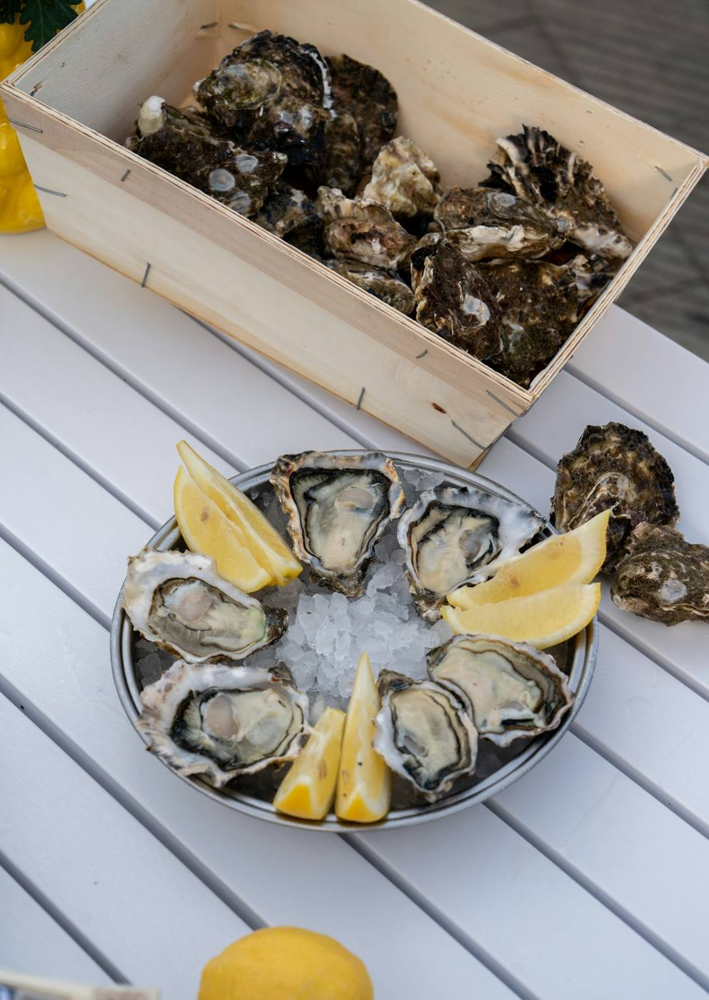
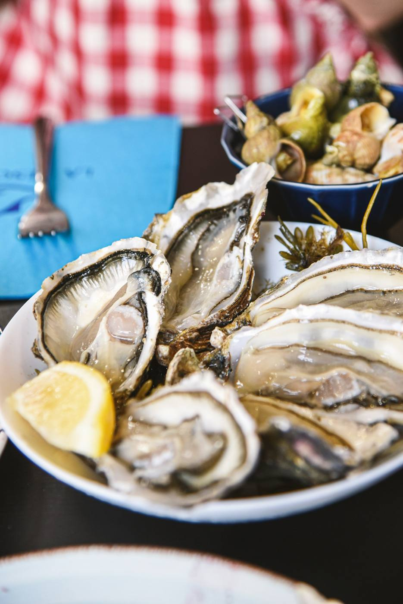

Restaurant, Concarneau
Poissons, fruits de mer et plats traditionnels, en terrasse ou en salle, avec vue sur la Ville close et le port de plaisance.


Les produits de la mer tiennent une grande place à la carte, à deux pas du port.
Des plats de tradition, préparés maison, pour le déjeuner comme pour le dîner.
Terrasse ou salle, toute l'année. À l'étage, la salle donne sur la Ville close.
Pour un groupe ou une table à l'étage, précisez-le en réservant par téléphone.